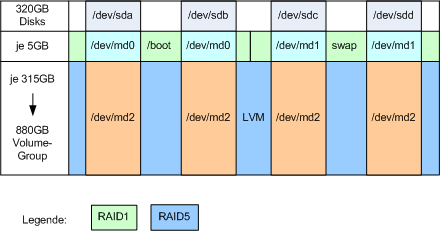

cfdisk /dev/sda cfdisk /dev/sdc sfdisk -d /dev/sda | sfdisk /dev/sdb sfdisk -d /dev/sdc | sfdisk /dev/sdd

cfdisk /dev/sda cfdisk /dev/sdc sfdisk -d /dev/sda | sfdisk /dev/sdb sfdisk -d /dev/sdc | sfdisk /dev/sdd
mdadm -v --create /dev/md0 --level=mirror --raid-devices=2 /dev/sd{a,b}1
mdadm -v --create /dev/md1 --level=mirror --raid-devices=2 /dev/sd{c,d}1
mdadm -v --create /dev/md2 --level=5 --raid-devices=4 /dev/sd{a,b,c,d}2
mkfs.ext3 /dev/md0
tune2fs -c 0 -i 0 /dev/md0
mkswap /dev/md1
mkfs.ext3 /dev/md2
tune2fs -c 0 -i 0 /dev/md2
pvcreate /dev/md2 vgcreate mainvg /dev/md2
lvcreate -n home -L10G mainvg mkfs.ext3 /dev/mainvg/home tune2fs -c 0 -i 0 /dev/mainvg/home
lvcreate -n root -L5G mainvg mkfs.ext3 /dev/mainvg/root tune2fs -c 0 -i 0 /dev/mainvg/root
lvcreate -L 5G -n xen mainvg mkfs.ext3 /dev/mapper/mainvg-xen tune2fs -i 0 -c 0 /dev/mapper/mainvg-xen
mkdir /mnt/install mount /dev/mapper/mainvg-root /mnt/install mkdir /mnt/install/boot mkdir /mnt/install/xen mount /dev/md0 /mnt/install/boot
# cat /etc/debootconfig/config # relevant parts: CHROOTMIRROR='ftp://ftp.tugraz.at/mirror/debian' HOSTNAME='fufoxen' MIRROR='ftp://ftp.tugraz.at/mirror/debian' TARGET='/mnt/install'
# execute grml-debootstrap: grml-debootstrap
# install Grub on /dev/md0: chroot /mnt/install mount -t proc none /proc cp /proc/mounts /etc/mtab
# adjust /etc/fstab: /dev/mapper/mainvg-root / auto defaults,errors=remount-ro 0 1 /dev/md0 /boot auto defaults 0 0 /dev/mapper/mainvg-home /home auto defaults 0 0 /dev/mapper/mainvg-xen /xen auto defaults 0 0 /sys /sys sysfs rw,nosuid,nodev,noexec 0 0 proc /proc proc defaults 0 0 /dev/cdrom /mnt/cdrom0 iso9660 ro,user,noauto 0 0
grub-install --recheck --no-floppy /dev/md0 update-grub -y sed -i "s#kopt=root=.*#kopt=root=/dev/mapper/mainvg-root ro max_loop=256#" /boot/grub/menu.lst update-grub -y
apt-get install asciidoc file-rc mailx mercurial \
mutt ntp ntpdate postfix psmisc tob
apt-get install bridge-utils \
libc6-xen \
linux-image-xen-686 \
xen-hypervisor-3.0.3-1-i386 \
xen-ioemu-3.0.3-1 \
xen-linux-system-2.6.18-5-xen-686 \
xen-tools \
xen-utils-3.0.3-1 \
xen-utils-3.0.3-1 bridge-utils
xen-create-image --debootstrap --dir=/xen \
--size=2Gb --memory=512Mb --fs=ext3 \
--cache=yes --dist=etch --hostname=ufoxen1 \
--ip 192.168.1.2 --netmask 255.255.255.0 \
--gateway 192.168.1.1 \
--initrd=/boot/initrd.img-2.6.18-5-xen-686 \
--kernel=/boot/vmlinuz-2.6.18-5-xen-686 \
--mirror=http://ftp.tugraz.at/mirror/debian
echo "options loop max_loop=256" >> /etc/modprobe.d/loop echo loop >> /etc/modules